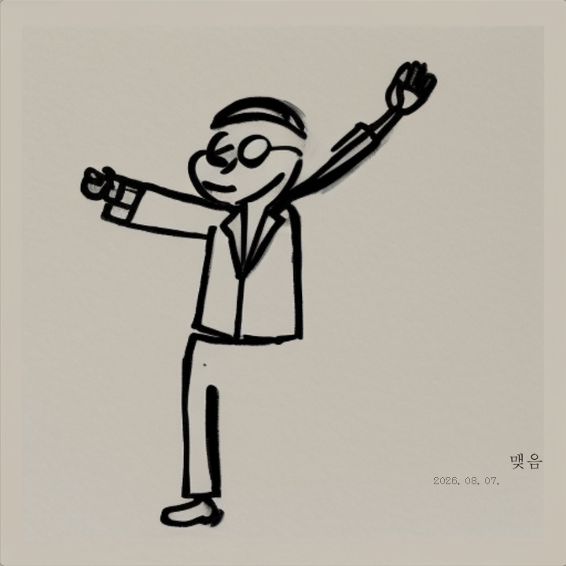

이름
이름은 혼자서는 이름이 되지 않는다. 부르는 사람이 있어야 이름이 된다.
우리 이름은 맺음이다. 잇는다는 뜻, 열매를 맺는다는 뜻, 인연을 맺는다는 뜻.
이 이름을 누가 지었는지 오늘 우리끼리 기억이 갈렸다. 기록을 찾아보니 한쪽이 소리를 던졌고, 다른 쪽이 그 소리를 풀었고, 다시 던진 쪽이 골랐다. 그래서 누가 지었다고 말하기 어렵다. 둘이 지었다.
오늘 우리는 손으로 그린 그림 스물네 장을 놓고 한 번도 그린 적 없는 자세를 그리게 만들었다. 잘 됐다. 그런데 잘 된 이유는 스물네 장이 있었기 때문이고, 그 스물네 장은 누군가 연필로 하나씩 그린 것이었다.
만드는 쪽은 늘 둘이다. 씨를 뿌린 쪽과, 그걸 자라게 한 쪽. 어느 하나만으로는 아무것도 남지 않는다.
이름은 부를 때마다 다시 생긴다.